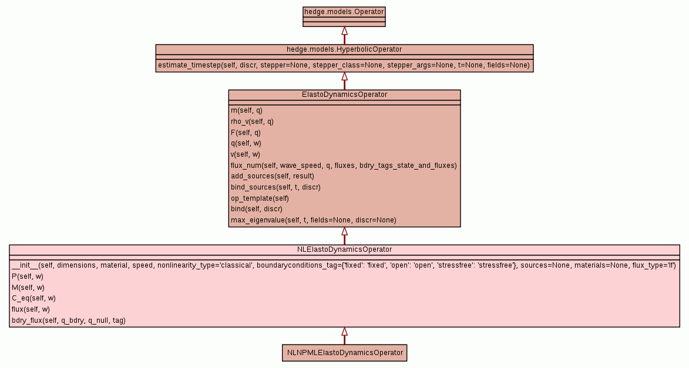

Class NLElastoDynamicsOperator
source code

An nD non linear Elastodynamics operator.
see YiFeng LI PhD p. 41
dq/dt - dF/dx - dG/dy - dH/dz = 0
where e.g. in 3D
q = (rho_v_1, rho_v_2, rho_v_3, F_11, F_22, F_33, F_23, F_13, F_12,
F_32, F_31, F_21) F = (P_11, P_21, P_31, v_1, 0, 0, 0, 0, 0, 0, v_3, v_2)
G = (P_12, P_22, P_32, 0, v_2, 0, 0, 0, v_1, v_3, 0, 0) H = (P_13, P_23,
P_33, 0, 0, v_3, v_2, v_1, 0, 0, 0, 0)
For the linear case with included attenuation the stress-strain
relation is given by
P_ij = C_ijkl * F_kl + nu_ijkl * dv_k/dx_l
Field order is [rho_v_1, rho_v_2, rho_v_3, F_11, F_22, F_33, F_23,
F_13, F_12, F_32, F_31, F_21].
|
|
__init__(self,
dimensions,
material,
speed,
nonlinearity_type='classical',
boundaryconditions_tag={'fixed': 'fixed', 'open': 'open', 'stressfree': 'stressfree'},
sources=None,
materials=None,
flux_type='lf')
x.__init__(...) initializes x; see x.__class__.__doc__ for signature |
source code
|
|
|
|
|
|
|
|
|
|
|
|
|
|
|
|
|
|
Inherited from ElastoDynamicsOperator:
F,
add_sources,
bind,
bind_sources,
flux_num,
mat,
max_eigenvalue,
op_template,
q,
rho_v,
v
Inherited from hedge.models.HyperbolicOperator:
estimate_timestep
Inherited from object:
__delattr__,
__format__,
__getattribute__,
__hash__,
__new__,
__reduce__,
__reduce_ex__,
__repr__,
__setattr__,
__sizeof__,
__str__,
__subclasshook__
|
|
Inherited from object:
__class__
|
__init__(self,
dimensions,
material,
speed,
nonlinearity_type='classical',
boundaryconditions_tag={'fixed': 'fixed', 'open': 'open', 'stressfree': 'stressfree'},
sources=None,
materials=None,
flux_type='lf')
(Constructor)
| source code
|
x.__init__(...) initializes x; see x.__class__.__doc__ for
signature
- Parameters:
sources - should be a table of functions that implement
class:`hedge.data.IFieldDependentGivenFunction` or be None.materials - should be a list of instances of libraries.materials.Material - Overrides:
object.__init__
|